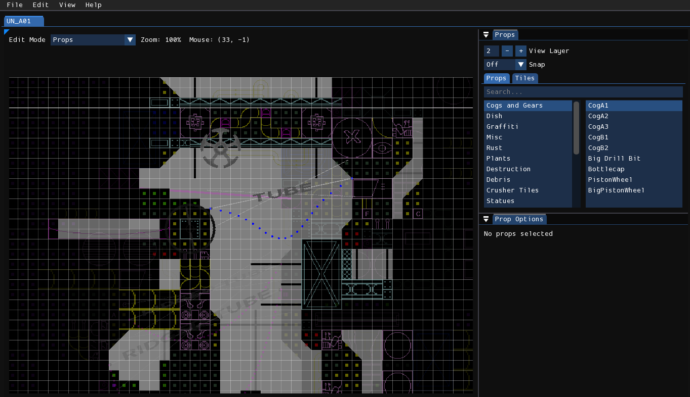
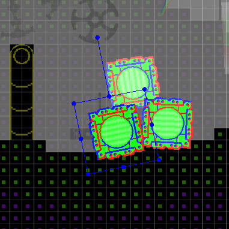
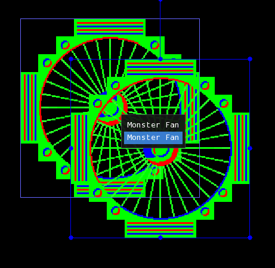
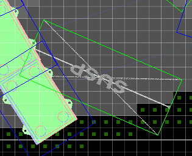
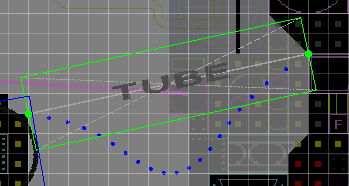

Props

Props are used similarly to tiles but with a higher degree of freedom for placement. They don't have to be grid-aligned, can be rotated freely, and can be positioned into any of the 30 sublayers rather than only one of the 3 work layers. Additionally, props are also used to make destruction effects and place physically simulated ropes, tubes, and wires.
Unlike tiles, however, props do not affect geometry. If you want a prop to be faux-collidable, you must place fitting geometry and make it invisible. This is done by using the Invisible Wall geometry type, the Invisible material, or filling them with an empty tile. You can also add a superslope object in the Rain World developer tools, but, as that is done within a separate program, it is a matter which does not concern Rained.
Editing props
You first must select the prop you want to place in the prop catalog, similar to how you would with tiles. Then, to place it down, either right-click in the level view or press the C key.

With a prop selected, you can move the prop by clicking and dragging it, scale the prop by dragging one of its corners or edges, and rotate it by either clicking and dragging the extruding widget, or holding down the Q or E keys.
Multiple props can be selected at once, by holding down the Shift key while selecting a new one. Deselection is done by doing the same action on a prop that was already selected. In addition, if you have more than one prop overlaid on top of the other, and you want to select a specific one, you can select an individual prop of your desire by double-clicking and selecting it from the pop-up menu.

Info
If you are annoyed with accidentally selecting props from layers you don't want to, the Prop selection layer filter option can be used to change which layers you are allowed to select props from relative to the current work layer.
You may also warp a prop as if editing it as an arbitrary quadrilateral. You do so by first activating Vertex Mode, done by pressing the F key. The outlines of props will then either turn white or green. You may manipulate the corners of white props as you please. Green-colored props are explained later.
Prop types
There are three different prop types:
- Standard
- Longs
- Rope-type props
This prop type determines how you can edit and interact with the prop.
Standard
These props are signaled by a blue outline when they are selected. When Vertex Mode is on, they will instead have a white outline, meaning that you can warp them as usual.
Destruction props
These render differently than other props, rendering subtractively rather than additively. The presence of them in your level adds meaning to the Render Order option.
Decals
When rendering, decals paste its texture to whatever solid area the prop is intersecting with.
Longs

These props are signaled by a green outline when they are selected. You edit them as you would with standard props when Vertex Mode is off, but if Vertex Mode is on, you can't warp them as you would with a standard prop. Instead, you can only move their endpoints.
Rope-type props

Rope-type props are similar to long props in terms of editing, but they also include a physically simulated rope. Each segment of the rope is displayed as a dot. To simulate the rope, hold down the Simulate button or the Space key. The rope will freeze once the button is let go.
Tip
Like long props, if you go into vertex mode, you can drag the two ends of rope points instead of manually moving/rotating/scaling them.
Prop options
On the bottom-right is a window titled "Prop Options". This is where you can edit the options of one or more props that are currently selected. The following is a list of all possible prop options. Note that not all props will have every option available.
- Render Order: Affects the order the prop is rendered in if a destruction prop is in the level.
- Depth Offset: The sublayer position of the prop, ranging from 0-29. Each sublayer is 1/10th of a work layer.
- Seed: Seed used for procedural generation.
- Render Time: Used to control whether or not the prop renders before or after effects.
- Custom Depth: The size of the prop in terms of sublayers.
- Variation: The variation of the prop used.
- Custom Color: The color of the decal prop.
- Apply Color: True if the prop should use its custom color.
The following options are applicable only to rope-type props:
- Flexibility: Controls the flexibility of the prop. Scaling the prop vertically does the same thing.
- Release: Controls which end of the prop is not attached.
- Thickness: The thickness of the rope.
Prop controls
The Prop Options window also has four buttons that deal with transforming the selected props.
- Reset: Resets the prop rotation and size.
- Flip X: Flips the selected props across the vertical axis.
- Flip Y: Flips the selected props across the horizontal axis.
- Depth Move: Opens a popup with a slider allowing you to move the selected props by the distance marked by the slider when "OK" is pressed. The "Wrap around" option, will make props wrap back to the opposite layer of the level if they exceed the minimum or maximum sublayer position.